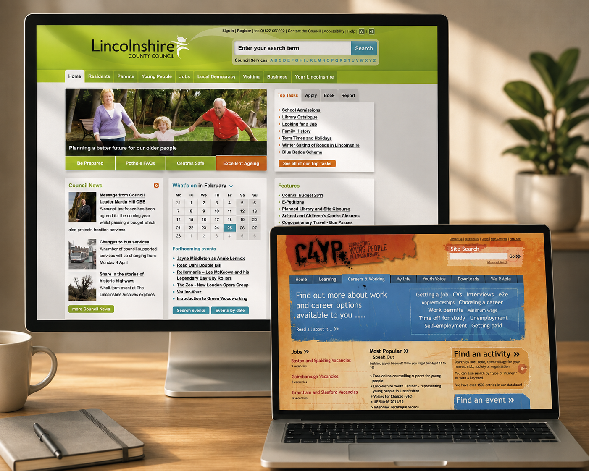
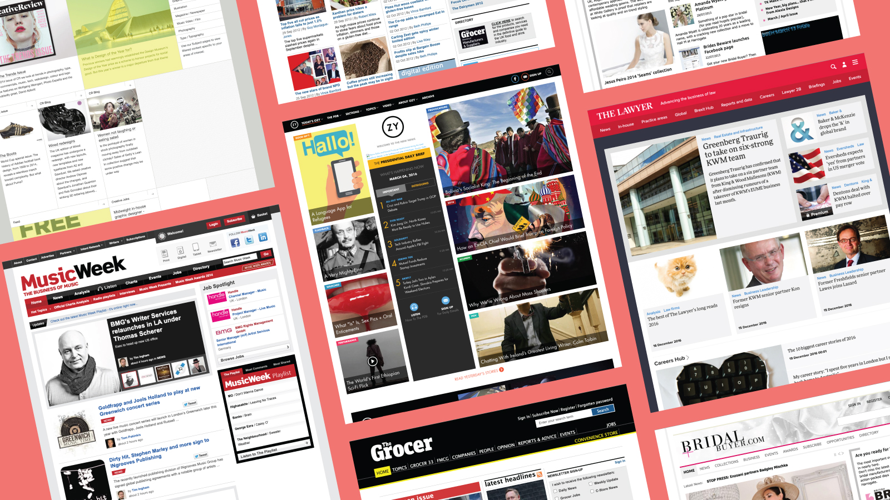

Caroline
Edwards
I am a Product Designer helping organisations turn difficult digital journeys into products that are simple, accessible and trustworthy. I've led UX on award-winning platforms for Centaur Media, Macmillan, EMAP and Lincolnshire County Council, combining research, accessibility and product thinking to create genuinely useful services that people can navigate with confidence.
Good design starts with understanding people, not just their data.
- Research
- Accessibility
- Workshops
- User journeys
- Design systems
- Wireframing
- Prototyping
- User testing
About

Some of the most valuable lessons I've learned about accessibility, inclusion and human behaviour haven't come from workshops or personas. They've come from working closely with people who experience the world differently every day.
That perspective shapes how I approach product design. I'm interested in the moments where digital products quietly create friction - when someone is stressed, distracted, short on time or needs additional support to complete an important task.
My background spans healthcare, publishing and public services, and it has taught me that successful products rarely succeed because of clever interfaces alone. They succeed because they respect people's context, reduce unnecessary effort and help users feel confident about what happens next.
I don't believe in a one-size-fits-all process. I have a consistent set of principles, but every project starts with understanding the people and constraints in front of me - not applying a template regardless of context.
Work

01Working with, not in
What being the outside agency, not a council employee, made possible on countless local government websites - including a keyboard accessibility fix and a teen co-design workshop that reset my assumptions.
View case study 02
02
Designed for the days that don't go to plan
End-to-end behaviour change product for healthcare client PrimeCare - user research, journey mapping, design system, wireframes and three rounds of usability testing.
View case study 03
03
Making healthcare booking feel human
Appointment booking experience for a private healthcare network, developed with design agency Creative Navy as part of the KCL programme.
View case study
04One design system, an industry's worth of titles
A shared design system for competing publishers who didn't want to lose what made their brands distinct. Sharing patterns doesn't mean losing identity.
View case study 05
05
Less friction for parents, less admin for schools
Improving Arbor's event ticket system. Less friction for parents, less admin for schools. How a small change to Arbor's ticket journey could benefit everyone.
Read on Medium →What people say
Caroline is an amazing UI/UX designer with a sharp eye for detail. I worked with her for a number of years. Caroline is a true professional who really takes time to understand client needs.
Caroline is one of those designers that take attention to detail to a new level. A true asset to any design team.
Caroline is a very competent and imaginative designer. She has a very confident, professional manner with clients and her peers, at all levels.
I could always rely on Caroline to get the best job. A real team player and a great asset to any company.
Caroline is very observant and caring about the people she works with, and has very strong mediation and communication skills.
Caroline is incredibly detail-oriented, brilliant at handling stakeholders, and possessed a deep understanding of the digital space. No matter how challenging a project, Caroline always handled it with absolute professionalism and a calm, positive attitude.
Caroline's designs are always very thoughtful and detailed, enabling them to be translated to code much more easily. She is a very warm, engaging and empathetic person - with peers and clients alike. She's an ideal team-mate!